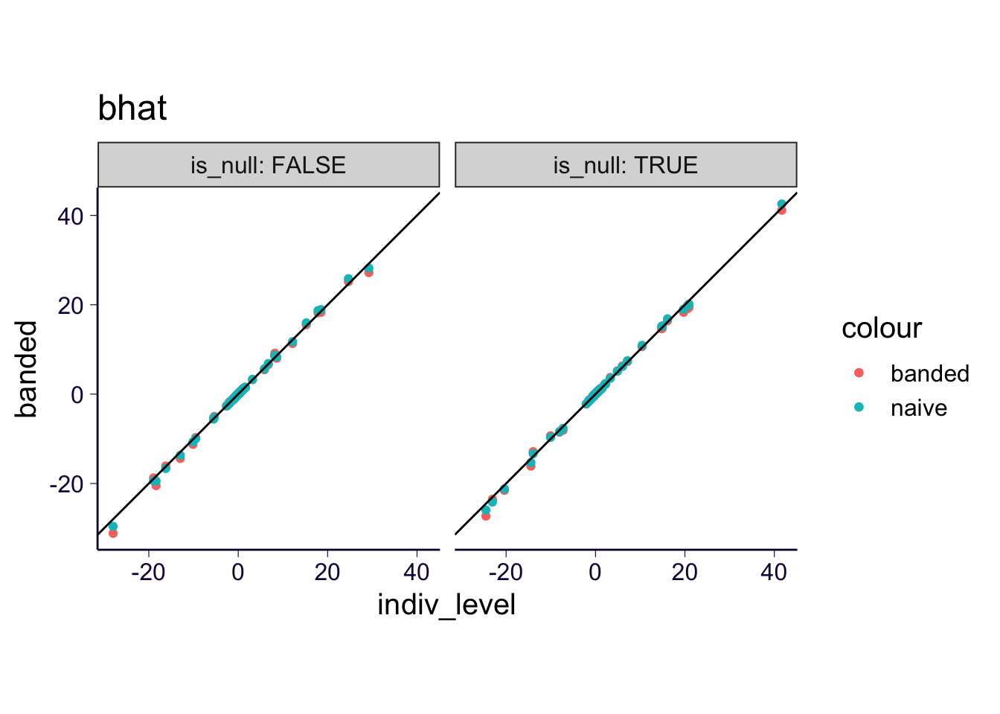
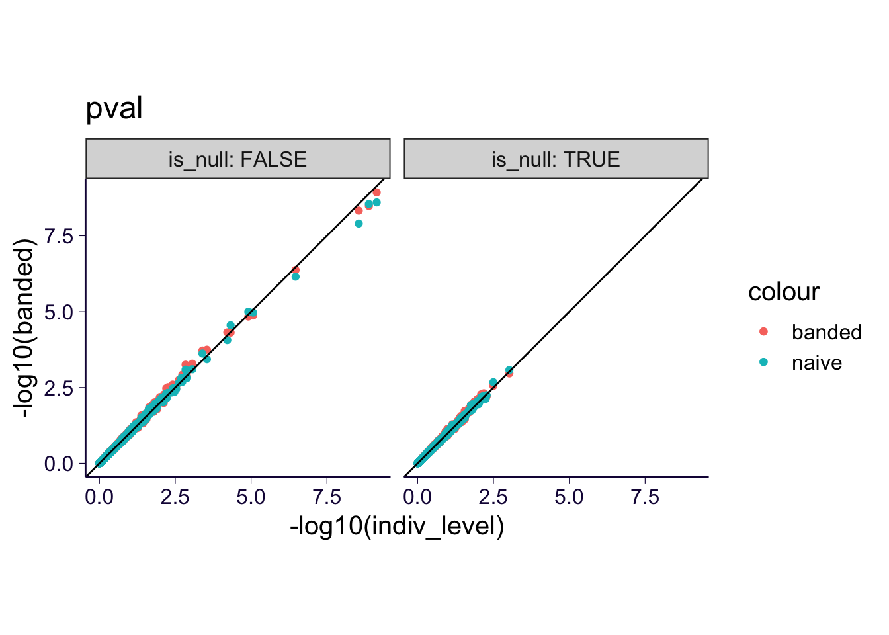
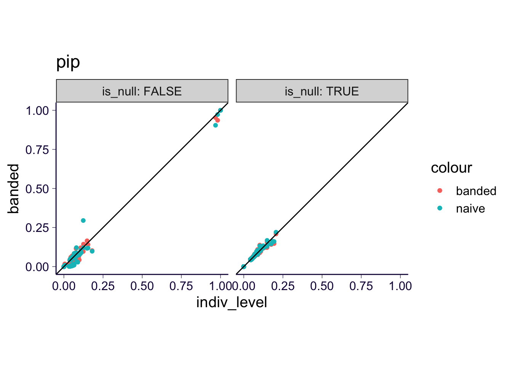

rm(list = ls())
library(ggplot2)
theme_set(theme_bw(base_size = 15))
source('https://gist.githubusercontent.com/liangyy/43912b3ecab5d10c89f9d4b2669871c9/raw/3ca651cfa53ffccb8422f432561138a46e93710f/my_ggplot_theme.R')
library(dplyr)
options(stringsAsFactors = F)
library(patchwork)
library(data.table)
options(datatable.fread.datatable = F)
source('rlib.R')The summary-ImageXcan is implemented at methods/simagexcan which contains two parts:
To test its performance, I set up a test pipeline at methods/simagexcan/test_run/run_test.sh where we tested the performance of S-ImageXcan under genotype covariance build with naive mode and banded mode (size = 200). The results are compared against individual-level ImageXcan under the null and alternative (no covariate).
imgx = inner_join(
read.csv('~/Desktop/tmp/ukb_idp/imagexcan_test_run/imagexcan_marginal.csv'),
read.csv('~/Desktop/tmp/ukb_idp/imagexcan_test_run/imagexcan_susie.csv'),
by = c('IDP', 'phenotype')
) %>% mutate(mode = 'indiv_level')
simgx = list()
for(pheno in unique(imgx$phenotype)) {
for(mode in c('naive', 'banded')) {
tmp = read.csv(paste0('~/Desktop/tmp/ukb_idp/imagexcan_test_run/simagexcan.', mode, '.', pheno, '.csv'))
simgx[[length(simgx) + 1]] = tmp %>% rename(cs = cs95) %>% mutate(phenotype = pheno, mode = mode)
}
}
simgx = do.call(rbind, simgx)
df = rbind(
imgx %>% select(IDP, phenotype, bhat, pval, pip, cs, mode),
simgx %>% select(IDP, phenotype, bhat, pval, pip, cs, mode)
)
df = df %>% mutate(is_null = !is.na(stringr::str_match(phenotype, 'null$')))varname = 'bhat'
df %>% reshape2::dcast(IDP + phenotype + is_null ~ mode, value.var = varname) %>% ggplot() +
geom_point(aes(x = indiv_level, y = banded, color = 'banded')) +
geom_point(aes(x = indiv_level, y = naive, color = 'naive')) +
geom_abline(slope = 1, intercept = 0) + th +
coord_equal() + ggtitle(varname) +
facet_wrap(~is_null, labeller = label_both) 
varname = 'pval'
df %>% reshape2::dcast(IDP + phenotype + is_null ~ mode, value.var = varname) %>% ggplot() +
geom_point(aes(x = -log10(indiv_level), y = -log10(banded), color = 'banded')) +
geom_point(aes(x = -log10(indiv_level), y = -log10(naive), color = 'naive')) +
geom_abline(slope = 1, intercept = 0) + th +
coord_equal() + ggtitle(varname) +
facet_wrap(~is_null, labeller = label_both) 
varname = 'pip'
df %>% reshape2::dcast(IDP + phenotype + is_null ~ mode, value.var = varname) %>% ggplot() +
geom_point(aes(x = indiv_level, y = banded, color = 'banded')) +
geom_point(aes(x = indiv_level, y = naive, color = 'naive')) +
geom_abline(slope = 1, intercept = 0) + th +
coord_equal() + ggtitle(varname) +
facet_wrap(~is_null, labeller = label_both) 
Take-away: